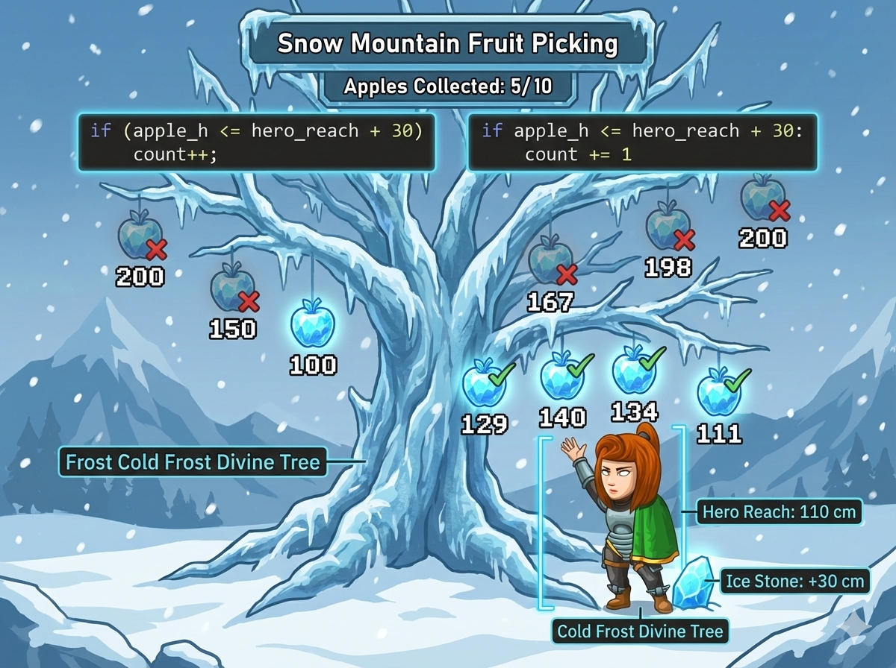

在雪山之巅，有一棵结着 10 颗冰晶苹果的神树。
每颗苹果的高度都不一样。
英雄想要摘苹果，但他有个身高限制：
👉 任务： 计算英雄站在冰石上，一共能摘到多少颗苹果。
这是一个典型的“遍历 + 条件判断”问题。
1. 定义一个长度为 10 的数组 a[10]。
2. 循环读入 10 个苹果高度。
3. 读入身高 h。
4. 再次循环，统计 a[i] <= h + 30 的个数。
1. 一行代码读入苹果列表 apples。
2. 读入身高 h。
3. 遍历列表，统计满足 apple <= h + 30 的个数。
先存数组，再计算，逻辑清晰。
#include <iostream> using namespace std; int main() { int apples[15]; // 存放10个苹果的高度 // 1. 读入 10 个苹果 for (int i = 0; i < 10; i++) { cin >> apples[i]; } // 2. 读入英雄伸手高度 int h; cin >> h; // 3. 计算站在石头上的最大高度 int max_reach = h + 30; int cnt = 0; // 计数器 // 4. 遍历判断 for (int i = 0; i < 10; i++) { if (apples[i] <= max_reach) { cnt++; // 能够着，计数+1 } } cout << cnt << endl; return 0; }
列表遍历，简单直接。
# 1. 读入 10 个苹果高度，变成列表 apples = list(map(int, input().split())) # 2. 读入英雄伸手高度 h = int(input()) # 3. 计算最大高度 (身高 + 30cm 石头) max_reach = h + 30 cnt = 0 # 计数器 # 4. 遍历每一颗苹果 for x in apples: if x <= max_reach: cnt += 1 print(cnt)